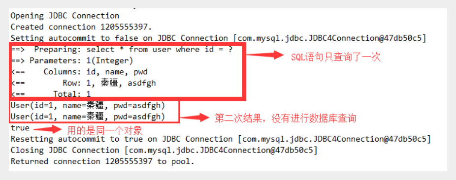
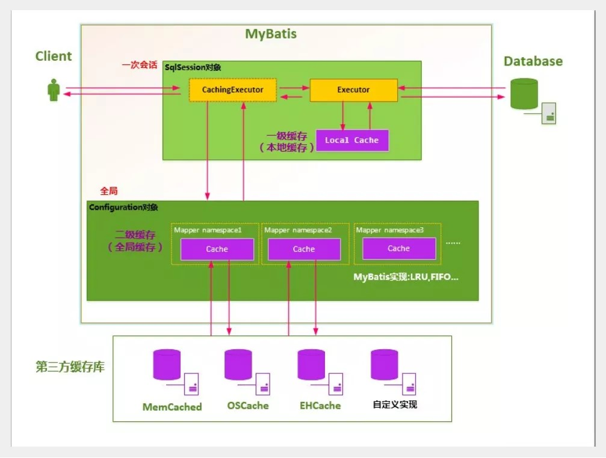

缓存
简介
1、什么是缓存 [ Cache ]？
- 存在内存中的临时数据。
- 将用户经常查询的数据放在缓存（内存）中，用户去查询数据就不用从磁盘上(关系型数据库数据文件)查询，从缓存中查询，从而提高查询效率，解决了高并发系统的性能问题。
2、为什么使用缓存？
- 减少和数据库的交互次数，减少系统开销，提高系统效率
3、什么样的数据能使用缓存？
- 经常查询并且不经常改变的数据。
Mybatis缓存
MyBatis包含一个非常强大的查询缓存特性，它可以非常方便地定制和配置缓存。缓存可以极大的提升查询效率。
MyBatis系统中默认定义了两级缓存：一级缓存和二级缓存
- 默认情况下，只有一级缓存开启。（SqlSession级别的缓存，也称为本地缓存）
- 二级缓存需要手动开启和配置，他是基于namespace级别的缓存。
- 为了提高扩展性，MyBatis定义了缓存接口Cache。我们可以通过实现Cache接口来自定义二级缓存
一级缓存
一级缓存也叫本地缓存：
- 与数据库同一次会话期间查询到的数据会放在本地缓存中。
- 以后如果需要获取相同的数据，直接从缓存中拿，没必须再去查询数据库；
测试
1、在mybatis中加入日志，方便测试结果
2、编写接口方法
//根据id查询用户
User queryUserById(@Param("id") int id);
3、接口对应的Mapper文件
<select id="queryUserById" resultType="user">
select * from user where id = #{id}
</select>
4、测试
@Test
public void testQueryUserById(){
SqlSession session = MybatisUtils.getSession();
UserMapper mapper = session.getMapper(UserMapper.class);
User user = mapper.queryUserById(1);
System.out.println(user);
User user2 = mapper.queryUserById(1);
System.out.println(user2);
System.out.println(user==user2);
session.close();
}
5、结果分析

一级缓存失效的四种情况
一级缓存是SqlSession级别的缓存，是一直开启的，我们关闭不了它；
一级缓存失效情况：没有使用到当前的一级缓存，效果就是，还需要再向数据库中发起一次查询请求！
1、sqlSession不同
@Test
public void testQueryUserById(){
SqlSession session = MybatisUtils.getSession();
SqlSession session2 = MybatisUtils.getSession();
UserMapper mapper = session.getMapper(UserMapper.class);
UserMapper mapper2 = session2.getMapper(UserMapper.class);
User user = mapper.queryUserById(1);
System.out.println(user);
User user2 = mapper2.queryUserById(1);
System.out.println(user2);
System.out.println(user==user2);
session.close();
session2.close();
}
观察结果：发现发送了两条SQL语句！
结论：每个sqlSession中的缓存相互独立
2、sqlSession相同，查询条件不同
@Test
public void testQueryUserById(){
SqlSession session = MybatisUtils.getSession();
UserMapper mapper = session.getMapper(UserMapper.class);
UserMapper mapper2 = session.getMapper(UserMapper.class);
User user = mapper.queryUserById(1);
System.out.println(user);
User user2 = mapper2.queryUserById(2);
System.out.println(user2);
System.out.println(user==user2);
session.close();
}
观察结果：发现发送了两条SQL语句！很正常的理解
结论：当前缓存中，不存在这个数据
3、sqlSession相同，两次查询之间执行了增删改操作！
增加方法
//修改用户
int updateUser(Map map);
编写SQL
<update id="updateUser" parameterType="map">
update user set name = #{name} where id = #{id}
</update>
测试
@Test
public void testQueryUserById(){
SqlSession session = MybatisUtils.getSession();
UserMapper mapper = session.getMapper(UserMapper.class);
User user = mapper.queryUserById(1);
System.out.println(user);
HashMap map = new HashMap();
map.put("name","kuangshen");
map.put("id",4);
mapper.updateUser(map);
User user2 = mapper.queryUserById(1);
System.out.println(user2);
System.out.println(user==user2);
session.close();
}
观察结果：查询在中间执行了增删改操作后，重新执行了
结论：因为增删改操作可能会对当前数据产生影响
4、sqlSession相同，手动清除一级缓存
@Test
public void testQueryUserById(){
SqlSession session = MybatisUtils.getSession();
UserMapper mapper = session.getMapper(UserMapper.class);
User user = mapper.queryUserById(1);
System.out.println(user);
session.clearCache();//手动清除缓存
User user2 = mapper.queryUserById(1);
System.out.println(user2);
System.out.println(user==user2);
session.close();
}
一级缓存就是一个map
二级缓存
二级缓存也叫全局缓存，一级缓存作用域太低了，所以诞生了二级缓存
基于namespace级别的缓存，一个名称空间，对应一个二级缓存；
工作机制
- 一个会话查询一条数据，这个数据就会被放在当前会话的一级缓存中；
- 如果当前会话关闭了，这个会话对应的一级缓存就没了；但是我们想要的是，会话关闭了，一级缓存中的数据被保存到二级缓存中；
- 新的会话查询信息，就可以从二级缓存中获取内容；
- 不同的mapper查出的数据会放在自己对应的缓存（map）中；
使用步骤
1、开启全局缓存 【mybatis-config.xml】
<setting name="cacheEnabled" value="true"/>
2、去每个mapper.xml中配置使用二级缓存，这个配置非常简单；【xxxMapper.xml】
<cache/>
官方示例=====>查看官方文档
<cache
eviction="FIFO"
flushInterval="60000"
size="512"
readOnly="true"/>
这个更高级的配置创建了一个 FIFO 缓存，每隔 60 秒刷新，最多可以存储结果对象或列表的 512 个引用，而且返回的对象被认为是只读的，因此对它们进行修改可能会在不同线程中的调用者产生冲突。
3、代码测试
- 所有的实体类先实现序列化接口
- 测试代码
@Test
public void testQueryUserById(){
SqlSession session = MybatisUtils.getSession();
SqlSession session2 = MybatisUtils.getSession();
UserMapper mapper = session.getMapper(UserMapper.class);
UserMapper mapper2 = session2.getMapper(UserMapper.class);
User user = mapper.queryUserById(1);
System.out.println(user);
session.close();
User user2 = mapper2.queryUserById(1);
System.out.println(user2);
System.out.println(user==user2);
session2.close();
}
结论
- 只要开启了二级缓存，我们在同一个Mapper中的查询，可以在二级缓存中拿到数据
- 查出的数据都会被默认先放在一级缓存中
- 只有会话提交或者关闭以后，一级缓存中的数据才会转到二级缓存中
缓存原理图

EhCache
第三方缓存实现—EhCache
Ehcache是一种广泛使用的java分布式缓存，用于通用缓存；
要在应用程序中使用Ehcache，需要引入依赖的jar包
<!-- https://mvnrepository.com/artifact/org.mybatis.caches/mybatis-ehcache -->
<dependency>
<groupId>org.mybatis.caches</groupId>
<artifactId>mybatis-ehcache</artifactId>
<version>1.1.0</version>
</dependency>
在mapper.xml中使用对应的缓存即可
<mapper namespace = “org.acme.FooMapper” >
<cache type = “org.mybatis.caches.ehcache.EhcacheCache” />
</mapper>
编写ehcache.xml文件，如果在加载时未找到/ehcache.xml资源或出现问题，则将使用默认配置。
<?xml version="1.0" encoding="UTF-8"?>
<ehcache xmlns:xsi="http://www.w3.org/2001/XMLSchema-instance"
xsi:noNamespaceSchemaLocation="http://ehcache.org/ehcache.xsd"
updateCheck="false">
<!--
diskStore：为缓存路径，ehcache分为内存和磁盘两级，此属性定义磁盘的缓存位置。参数解释如下：
user.home – 用户主目录
user.dir – 用户当前工作目录
java.io.tmpdir – 默认临时文件路径
-->
<diskStore path="./tmpdir/Tmp_EhCache"/>
<defaultCache
eternal="false"
maxElementsInMemory="10000"
overflowToDisk="false"
diskPersistent="false"
timeToIdleSeconds="1800"
timeToLiveSeconds="259200"
memoryStoreEvictionPolicy="LRU"/>
<cache
name="cloud_user"
eternal="false"
maxElementsInMemory="5000"
overflowToDisk="false"
diskPersistent="false"
timeToIdleSeconds="1800"
timeToLiveSeconds="1800"
memoryStoreEvictionPolicy="LRU"/>
<!--
defaultCache：默认缓存策略，当ehcache找不到定义的缓存时，则使用这个缓存策略。只能定义一个。
-->
<!--
name:缓存名称。
maxElementsInMemory:缓存最大数目
maxElementsOnDisk：硬盘最大缓存个数。
eternal:对象是否永久有效，一但设置了，timeout将不起作用。
overflowToDisk:是否保存到磁盘，当系统当机时
timeToIdleSeconds:设置对象在失效前的允许闲置时间（单位：秒）。仅当eternal=false对象不是永久有效时使用，可选属性，默认值是0，也就是可闲置时间无穷大。
timeToLiveSeconds:设置对象在失效前允许存活时间（单位：秒）。最大时间介于创建时间和失效时间之间。仅当eternal=false对象不是永久有效时使用，默认是0.，也就是对象存活时间无穷大。
diskPersistent：是否缓存虚拟机重启期数据 Whether the disk store persists between restarts of the Virtual Machine. The default value is false.
diskSpoolBufferSizeMB：这个参数设置DiskStore（磁盘缓存）的缓存区大小。默认是30MB。每个Cache都应该有自己的一个缓冲区。
diskExpiryThreadIntervalSeconds：磁盘失效线程运行时间间隔，默认是120秒。
memoryStoreEvictionPolicy：当达到maxElementsInMemory限制时，Ehcache将会根据指定的策略去清理内存。默认策略是LRU（最近最少使用）。你可以设置为FIFO（先进先出）或是LFU（较少使用）。
clearOnFlush：内存数量最大时是否清除。
memoryStoreEvictionPolicy:可选策略有：LRU（最近最少使用，默认策略）、FIFO（先进先出）、LFU（最少访问次数）。
FIFO，first in first out，这个是大家最熟的，先进先出。
LFU， Less Frequently Used，就是上面例子中使用的策略，直白一点就是讲一直以来最少被使用的。如上面所讲，缓存的元素有一个hit属性，hit值最小的将会被清出缓存。
LRU，Least Recently Used，最近最少使用的，缓存的元素有一个时间戳，当缓存容量满了，而又需要腾出地方来缓存新的元素的时候，那么现有缓存元素中时间戳离当前时间最远的元素将被清出缓存。
-->
</ehcache>
合理的使用缓存，可以让我们程序的性能大大提升！
转载请注明来源，欢迎对文章中的引用来源进行考证，欢迎指出任何有错误或不够清晰的表达。可以在下面评论区评论，也可以邮件至 1589631311@qq.com